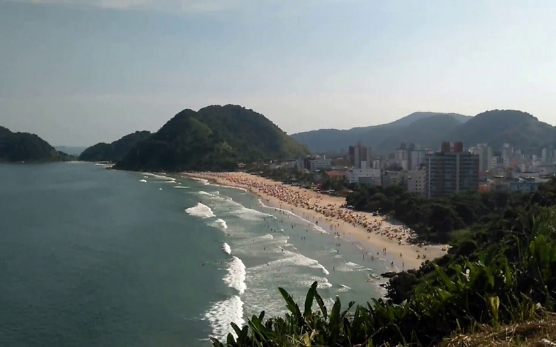
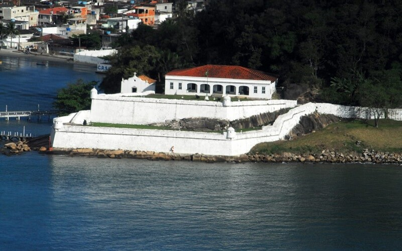
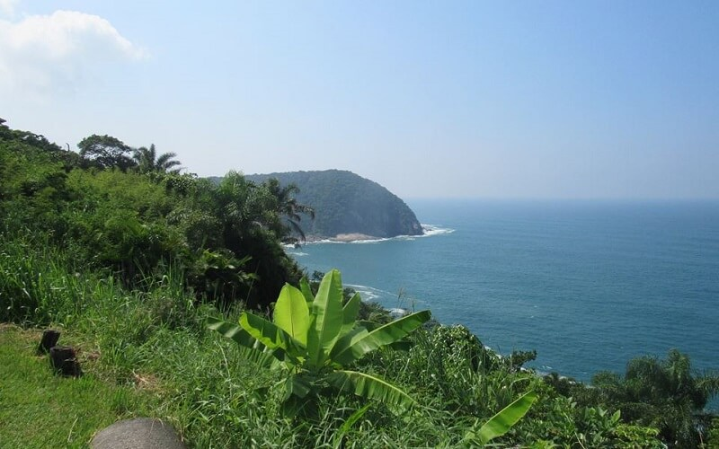
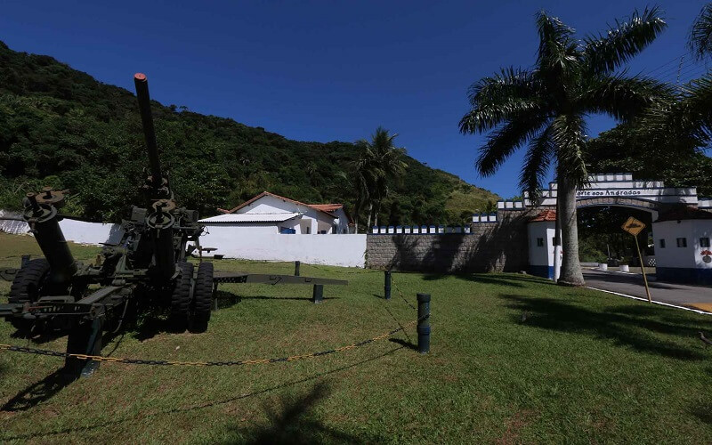
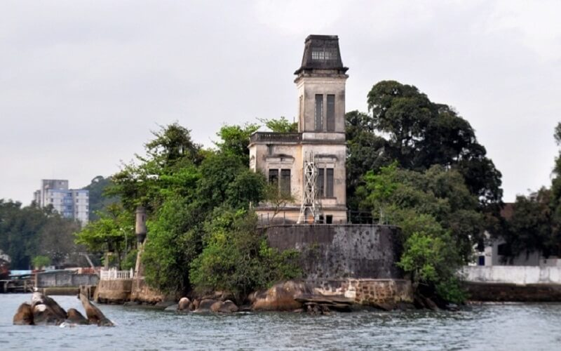
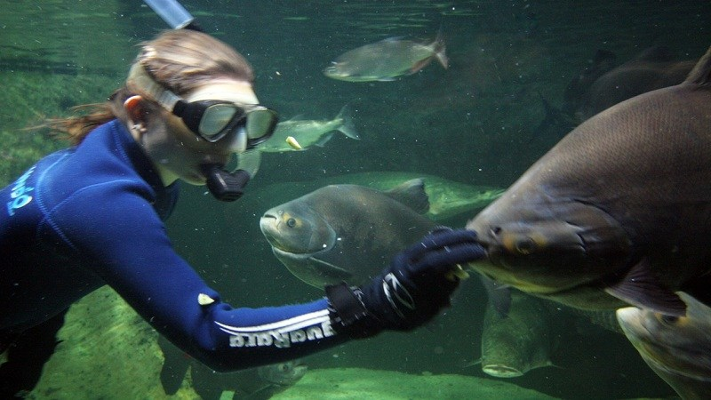

Mirante do Morro do Maluf

O Mirante do Morro da Campina se localiza entre a Praia de Pitangueiras e Enseada, é o Marco Zero da cidade de Guarujá. Lá você pode praticar esportes radicais como escalada e voo livre, além de desfrutar de uma bela vista panorâmica.
R. Morro de Maluf, 417 - Jardim Tejereba, Guarujá - SPMirante do Morro da Caixa D’Água
Atrás do mercado de peixes no bairro das Astúrias, seu acesso se dá pela Rua Alexandre Migues Rodrigues. É possível observar do mirante as praias Astúrias e Tombo, e é um bom lugar para a prática de voo livre.
Tombo, Guarujá - SP, 11420-100Fortaleza Santo Amaro da Barra Grande
A Fortaleza da Barra Grande foi erguida durante a unificação das coroas portuguesa e espanhola (1580-1640), mais precisamente em 1584. Está edificada sobre um esporão de rochoso em frente ao estuário de Santos. Tem suas paredes e muralhas espessas construídas com grandes blocos de pedra, óleo de baleia e cal de sambaqui.
Foi desativada em 1911, tendo seus equipamentos e baterias transferidos para a Fortaleza de Itaipu. Passou vários anos abandonada, sujeita à deterioração pelo tempo, falta de manutenção e principalmente pela invasão de vândalos que retiravam madeiras e telhas pertencentes à fortaleza.
Foi integrada novamente ao círculo militar em 1960, atualmente está tombada pelo IPHAN, em 1964, que em parceria com a Universidade Católica de Santos- Unisantos, restauraram a fortaleza.
A Fortaleza também faz parte do roteiro turístico e histórico “Caminhos de Anchieta”, por ter recebido visitas do Padre José de Anchieta e por hoje abrigar uma imagem do beato. Assinalando a entrada do Porto de Santos, na rota de barcos e navios, a Fortaleza da Barra é mirante de privilegiada beleza.
Restaurada e adaptada, teve a casa de pólvora transformada em capela, que conta atualmente com um painel de 20 m² chamado “Vento Vermelho”, a última obra de autoria do artista plástico Manabu Mabe.
R. Messías Borges, 380 - Santa Cruz dos Navegantes, Guarujá - SPMirante do Costão das Tartarugas
O Mirante do Costão das Tartarugas, além da visão para praia da Enseada e Costão das Tartarugas, oferece o serviço de um restaurante, com terraço coberto e ao ar livre, onde também observar o Costão das Tartarugas e a praia da Enseada. O acesso é por estrada asfaltada ao final da Avenida Miguel Stefano e Avenida das Tartarugas, na orla da praia.
Caminho das Tartarugas, 186 - Enseada, Guarujá - SP, 11443-460Forte dos Andradas
O Forte dos Andradas, inicialmente chamado de Forte do Monduba (expressão indígena que significa ruído barulhento, provocado pelo choque estrondoso das ondas nos penhascos), foi projetado em 1934, teve sua construção iniciada em 1938 e foi inaugurado em 1942. Sua denominação faz homenagem aos defensores da Independência, os irmãos Andradas: José Bonifácio, Antônio Carlos e Martin Francisco. Preparado para resistir aos intensos ataques aéreos, foi totalmente cravado na rocha, a aproximadamente 300m do nível do mar. Compõe-se de um complexo sistema de túneis de concreto, câmaras e elevadores que permitem a movimentação dos soldados e da munição. Considerado o último forte construído no Brasil, constitui-se numa exuberante atração turística, mantida pela 1ª Brigada da Artilharia Antiaerea.
Rua Horácio Guedes Barreiros S/N - Jardim Guaiuba, Guarujá - SP, 11421-080Forte do Itapema
A fortaleza do Itapema é uma das mais antigas edificações do Brasil, foi construída no século XVI com a finalidade de proteger o porto de Santos dos invasores. A fortaleza foi erguida em uma única rocha do lado esquerdo do estuário, mais precisamente no antigo bairro do Itapema, hoje, distrito de Vicente de Carvalho, foi levantada com grandes blocos de pedra, óleo de baleia e cal de sambaquis. Em 1638 foi reconstruída por ordem do comandante Torquato Teixeira de Carvalho, com o reforço de 8 peças de artilharia.
Era terceira muralha fortificada construída na região, sendo possível avistar toda a vila de Santos, a fortaleza passou por várias épocas de abandono, reconstrução e reformas. Entre 1735 e 1738 foi novamente reconstruída, sendo emparelhada com artilharia de grosso calibre, os últimos canhões avistados sobre a muralha datam de 1850, em 1883 a fortaleza sofreu um violento incêndio que a deixou totalmente em ruínas. Atualmente está sob responsabilidade da Alfândega de Santos.
R. Itapema, 55 - Jardim Cunhambebe (Vicente de Carvalho), Guarujá - SPAquário Acqua Mundo
O Aquário do Guarujá – Aqcua Mundo, está localizado na Praia da Enseada e possui mais de 1 milhão e 400 mil litros de água em uma área de 5.775 m².
É um empreendimento turístico que privilegia a educação ambiental e a pesquisa ecológica. Com isto desenvolve oficinas temáticas, ciclo de palestras.
Também oferece aos visitantes 49 recintos (água doce, salgada, aquaterrários e terrários) com representações de vários habitats marinhos e terrestres como manguezal, pantanal, praia e floresta amazônica inundada.
Ao passar por lá o visitante tem a oportunidade de conhecer e admirar uma grande de variedade de animais dos mais diversos ambientes e grupos zoológicos, ou seja, desde peixes, lindos corais e tubarões, até os fofíssimos pinguins e amedrontadores jacarés e cobras. De acordo com o site da Prefeitura do Guarujá, o aquário possui cerca 180 espécies de animais, totalizando 3 mil animais em exposição.
Ao passar por lá o visitante tem a oportunidade de conhecer e admirar uma grande de variedade de animais dos mais diversos ambientes e grupos zoológicos, ou seja, desde peixes, lindos corais e tubarões, até os fofíssimos pinguins e amedrontadores jacarés e cobras. De acordo com o site da Prefeitura do Guarujá, o aquário possui cerca 180 espécies de animais, totalizando 3 mil animais em exposição.
Av. Miguel Estefno, 2001 - Jardim Tres Marias, Guarujá - SP, 11440-532